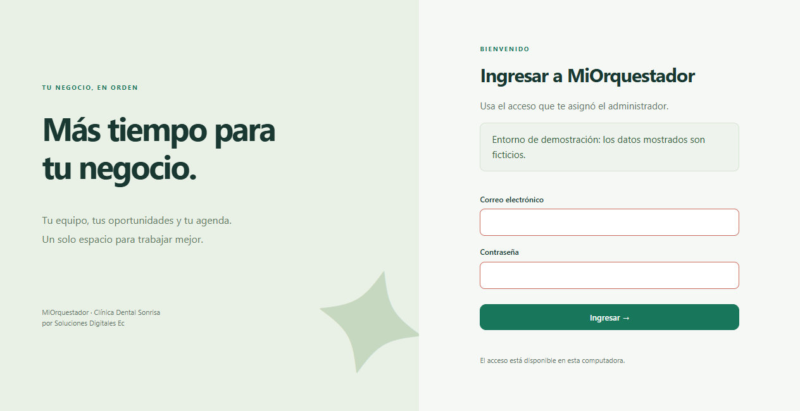

Caso de estudio · producto propio
Un solo panel para la agenda, la oferta y las conversaciones del negocio
MiOrquestador reúne en un mismo espacio los datos que un negocio necesita para atender: la agenda con sus profesionales, el catálogo de servicios y precios, la base de conocimiento que consulta su asistente y la bandeja donde las conversaciones pasan de la ayuda automática a una persona. Esta página muestra la demostración local con datos ficticios y declara, por separado, qué está comprobado con un proveedor de IA real y qué todavía no.
- Plataforma
- Web, autoalojada, un espacio por negocio
- Adaptable a
- Clínica de ejemplo; adaptación a otros rubros pendiente de validar
- Negocio ejemplo
- Clínica Dental Sonrisa (ficticio)
- Desarrolla
- Soluciones Digitales Ec.
Las doce capturas provienen de una instalación local de la aplicación con una base de datos temporal de prueba. La clínica, sus nombres, teléfonos y precios son datos de prueba; la instalación avisa del entorno de demostración cuando se arranca en ese modo. Ninguna captura fue retocada: son originales del navegador sobre la aplicación real.
Recorrido por la interfaz
Doce capturas originales de la aplicación en ejecución: nueve de escritorio (1264 px) y tres de teléfono (390 px). Use los chips numerados o las flechas para recorrerlas en el visor; cada miniatura enlaza la misma captura a resolución completa.

Teclado: ← y → recorren la galería. Haga clic en cualquier captura del visor o de la retícula para verla completa.
Funciones demostradas
Cada función de esta lista aparece en al menos una captura original del recorrido.
Panel del negocio
Contactos registrados, conversión a cliente, valor estimado de las oportunidades y seguimiento pendientes de atender, con el embudo por etapa y la alerta en vivo de conversaciones que requieren a una persona. Capturas 02, 10
Base de conocimiento (RAG)
Documentos del negocio con visibilidad pública o privada, versión e índice. La pantalla muestra documentos publicados y los controles de carga y previsualización. La captura acredita la interfaz; los cambios de estado requieren comprobaciones funcionales. Captura 04
Asistente con fuentes
La captura muestra una consulta, una respuesta y su fuente declarada en modo simulado. Las pruebas previas con un proveedor real se describen más abajo con su alcance. Captura 09
Bandeja humana
Cuando la asistencia automática pausa por una persona, la derivación queda como alerta con prioridad y espera: la conversación no se pierde y el control no se devuelve en automático. Capturas 03, 11
Catálogo e inventario
Servicios y productos con precio, detalle y duración; controles de edición en celda y revisiones visibles. La captura no demuestra por sí sola el comportamiento ante ediciones simultáneas. Capturas 05, 12
Agenda
Semana con profesionales y citas en distintos estados, filtros y vista por día. Captura 06
Configuración del negocio
Nombre, rubro, zona horaria y moneda; saludo y fuera de horario del asistente; horario semanal con la regla que aplican tanto el panel como el canal al aceptar una reserva, y fechas cerradas o con horario especial. Captura 07
Accesos y privacidad
Listado de usuarios con rol y estado, formulario de alta y control de restablecimiento. La cuenta visible pertenece a la demo. Esta pantalla no acredita una política completa de privacidad ni muestra por sí sola la invalidación de sesiones. Captura 08
Diseño adaptable
La misma interfaz en escritorio y en teléfono (390 px), capturada en modo claro. Capturas 10, 11, 12
Qué está comprobado y qué no
Distinguimos tres niveles con nombre y fecha. Ninguna parte de esta página se describe como «producción» ni como «listo para clientes».
Comprobado en local, con componentes simulados
Todo lo que se ve en las capturas: navegación completa de la interfaz, catálogo con revisiones, documentos de conocimiento publicados, bandeja con derivación humana y agenda sembrada. El asistente respondió en modo simulado (selección explícita de desarrollo, indicada en su propio pie de mensaje). La conversación derivada es un escenario generado localmente. Estas capturas evalúan producto y diseño, no la calidad de un modelo real. Suite pertinente en la sesión de captura: 7 pruebas de interfaz pasadas, 4 omitidas (requieren un recorrido extremo a extremo no aplicable aquí).
Comprobado antes con un proveedor de IA real (chat interno)
El 31 de octubre de 2026 el chat interno de administración se ejercitó contra el proveedor configurado: 11 consultas reales, con recuperación efectiva de conocimiento, catálogo, agenda y existencias. Nueve respuestas salieron con fuentes trazables y a dos preguntas sin datos disponibles el sistema respondió que no las tenía, en lugar de inventar. La memoria multi-turno del chat interno y su integración en el canal se comprobaron después con pruebas locales y adaptadores simulados. Las 11 consultas reales acreditan el chat interno; no acreditan la conversación multi-turno del canal con un modelo real ni la entrega de mensajes por WhatsApp.
No comprobado / pendiente
- WhatsApp de extremo a extremo con Meta: recepción real del evento del mensaje, envío real y los estados «entregado» y «leído», que sólo confirma el proveedor. No operativo; no se declara lo contrario.
- Calidad y comportamiento del asistente con un modelo real fuera del chat interno (referencias entre turnos de cliente final y rubros distintos al ejemplo odontológico).
- Operación en producción multi-negocio con datos reales, respaldo y recuperación.
Edición base y camino de ampliación
Lo que muestra esta página es la edición base del producto, ya construida y reproducible en local: no un prototipo ni una maqueta. Las ediciones superiores no son otro producto, sino el mismo panel creciendo por módulos acordados por escrito en la oferta.
Edición base
Instalación y adaptación
Un negocio y una sucursal por instalación, hasta tres profesionales con agenda. Incluye adaptación de marca, catálogo con revisiones, conocimiento editable con publicación y reversión, agenda con estados e historial, bandeja con derivación a una persona y asistente interno con fuentes citadas. El paquete de despliegue incluido permite instalarlo en un servidor del propio negocio.
Edición ampliada
Más volumen y análisis
Configuración ampliada, carga inicial de datos mayor e informes y segmentos comerciales adicionales, sobre la misma base y sin cambiar de herramienta.
Edición superior
En preparación · sin fecha comprometida
Calificación explicada de oportunidades, análisis de conversaciones, seguimiento automatizado, base PostgreSQL privada, operación multi-rubro y canales adicionales además de WhatsApp. Su expediente está separado del código que muestra esta página.
Reproducir la demostración en local
La instalación de prueba vive en el repositorio del proyecto y se levanta en el equipo, escuchando únicamente en 127.0.0.1. La demo no necesita un proveedor de inteligencia artificial, no utiliza Meta ni WhatsApp y usa una base de prueba local separada que permanece en la caché entre arranques. Cerrar el servidor no elimina automáticamente esa base.
Cada arranque genera una contraseña nueva y efímera que sólo se muestra en la terminal del que levanta la demo; no existe una contraseña fija de demostración en el repositorio ni en este caso de estudio, y los accesos no se publican aquí. Las instrucciones de ejecución pertenecen a la documentación interna del proyecto, no al material público de este portafolio.